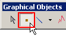
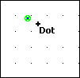

|
|
|
|
|
|
|
|
Click the Dot icon in the Graphical Objects toolbar to be in the Dot drawing mode.

Click the panel to place a dot. Continue clicking on the panel to place as many dots as needed.

Right-click the panel to exit the drawing mode. The last object drawn will become selected.
Modify the attributes of this dot in the Property Inspector.
The following table describes the Dot's properties.
|
Property |
Description |
|
Name |
The object's name. Whenever an object is created, a default name is generated. When renaming an object, its name must be unique within the target, must contain no more than 32 valid characters, and must follow the naming conventions. For more information, see Appendix 9, Naming Conventions. |
|
Y |
Defines the centre coordinate of the dot, from between -32768 and 32767 for 1 pixel dots. Changing the size of the dot adjusts the coordinates you can enter. |
|
X |
|
|
LineColor |
The object's color. For more information, see Section 7.3.1, Color Palette. |
|
Size |
The object's diameter can be set to 1, 2, 3, or 5 pixels. |
|
Animation |
The ellipsis button For details, see Chapter 8, Animating Graphics.
|
|
SaveDefaults |
The forward-arrow button |
|
RestoreDefaults |
The back-arrow button |
|
Placeholder |
You can assign a placeholder in any property that requires a variable definition. Click the ellipsis to open the Placeholders dialog box and edit the variable placeholder for the object. The dialog box only displays if you had set up a placeholder for the object. For more information on placeholders, see Section 21.2.4, Working with Variable Placeholders.
|